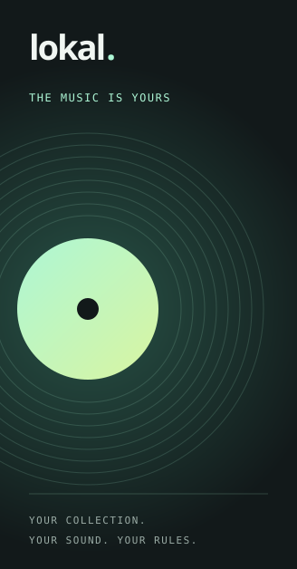
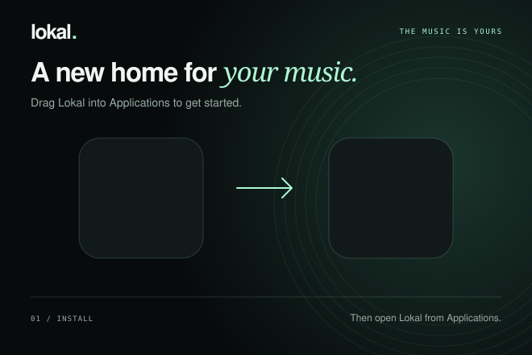

The website's colors, typography and record artwork. Familiar installation on each platform.
01 / WINDOWS — WELCOME
Lokal Setup − ×

01 / WELCOME
Your music.Your world.
A beautiful home for your collection.
Choose where Lokal lives. Then bring your music along.
LOCAL-FIRST. OPEN SOURCE.
WelcomeInstall locationProgressOpen Lokal
Design preview. The shipped installer uses native Windows controls, live text and real installation progress. Silent updates skip the welcome screen.
02 / macOS — DRAG TO INSTALL
Lokal − ×

LokalApplicationsDesign preview. Finder supplies the actual app and Applications icons. AppImage, DEB and MSIX keep their platform's installation behavior.